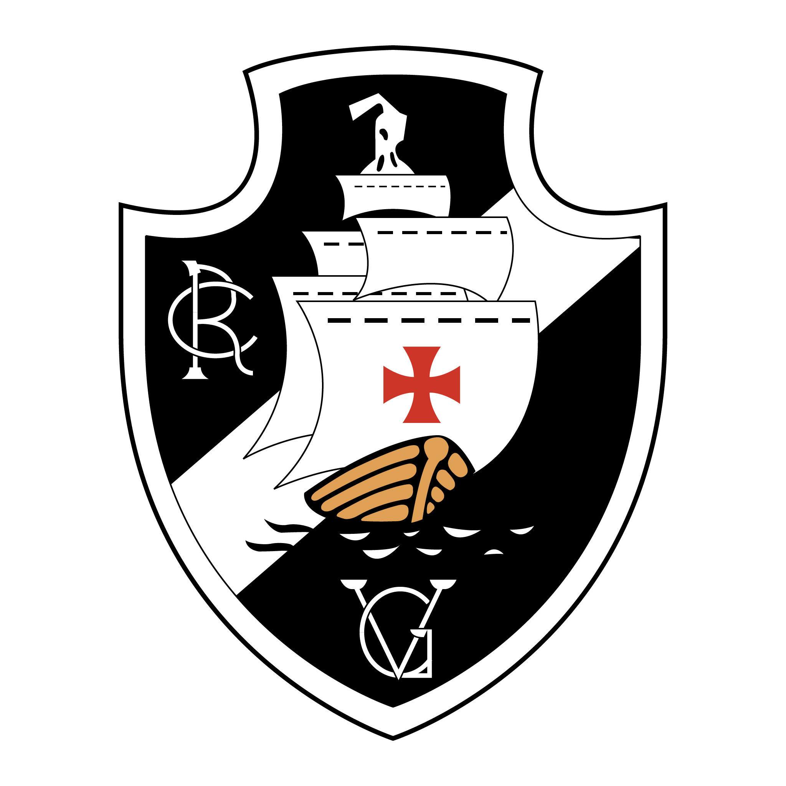

São Januário e outras sedes
A primeira sede vascaína se localizou em um antigo sobrado na antiga Rua da Saúde nº 127 (atual nº 167 da rua Sacadura Cabral), em frente ao Largo da Imperatriz, hoje Praça dos Estivadores.[97] A primeira sede era apenas provisória, e foi alugada por Francisco Gonçalves do Couto Junior,[98] que viria a ser eleito o primeiro presidente vascaíno. Neste imóvel, o Vasco organizou os seus serviços de secretaria, tesouraria e outros mais necessários à vida desportiva e social.[98] Em frente à primeira sede, organizou-se também a primeira escolinha de remo do Vasco,[98][99] aproveitando-se do acesso ao mar pelo cais do Largo. Do prédio que serviu como primeira sede do Vasco, hoje somente resta a fachada em pé.[98]
Em assembleia geral em 7 de setembro de 1898, a diretoria vascaína escolheu o local da nova sede definitiva: a praia formosa, localizada na Ilha das Moças. Lá foi construído um amplo barracão, em formato de chalé.[100] Para facilitar o acesso à ilha, sócios do Vasco constroem uma ponte de madeira, conectando-a ao continente.[101] A Ilha das Moças não existe mais, tendo sido aterrada com a conclusão da Avenida Francisco Bicalho. Hoje em seu lugar se encontra a Rodoviária Novo Rio.[102] Já a praia formosa era localizada onde hoje se acha a Estação Barão de Mauá.[103]
São Januário é como é conhecido o estádio do Vasco da Gama. Inaugurado em 21 de Abril de 1927, foi construído sob um custo aproximado de Rs 2.609:895$000 (dois mil seiscentos e nove contos e oitocentos e noventa e cinco mil réis) frutos de arrecadação popular.[107][108] Seu nome oficial é Estádio Vasco da Gama, mas foi popularmente batizado por conta do Complexo Esportivo em que é situado à rua São Januário.[109]

Vasco da Gama
| ..... | |
| ....... | |
|  | |
| Nome | Club de Regatas Vasco da Gama |
|---|---|
| Torcedor | Vascaino, Cruzmaltino |
| Fundação | 21/08/1898 |
| Estádio | São Januário |
| Localização | Rio de Janeiro, Brasil |
| Mascote | Almirante, Bacalhau |